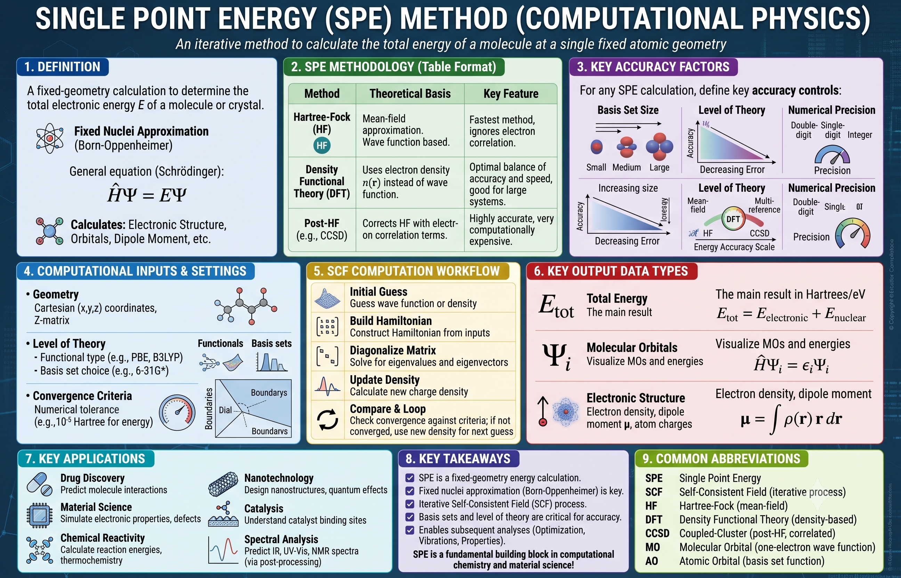

In my first week at Prof. Jer-Lai Kuo's lab at Academia Sinica in Taipei, someone handed me a coordinate file — a short tripeptide, atoms and positions, nothing else — and told me to run a single point energy calculation on it. I opened an example Gaussian input file on the HPC cluster and stared at a route line packed with cryptic keywords, followed by a molecule specification I barely recognized. I understood exactly none of it. I did not know which keywords mattered, which were safe to leave at their defaults, or what would break if I guessed wrong.
When I admitted this, my supervisor's advice was disarmingly practical: "Just run it, then we'll talk about what the number means." So I submitted the job to the queue. It converged, a number came out — some large negative energy in Hartree — and only afterwards, working backwards from that number, did I begin to understand what I had actually asked the computer to do.
That experience — running SPE before understanding it — is exactly why this post exists. Over the following months I ran thousands of these calculations as reference data for neural network potentials, and each time I understood a little more of what was happening inside the SCF loop. This article is the document I wish someone had handed me alongside that coordinate file: rigorous enough to serve as my own future reference, but written by someone who remembers what it feels like to not know what a single keyword on that route line means.
1. Definition: What SPE Actually Calculates
A Single Point Energy (SPE) calculation computes the total electronic energy \(E\) of a molecule or crystal at a fixed atomic geometry. The nuclear positions are held constant throughout — there is no geometry optimization, no molecular dynamics, no relaxation of any kind. The calculation solves the electronic Schrödinger equation under the Born-Oppenheimer approximation:
where \(\hat{H}_\text{el}\) is the electronic Hamiltonian — the kinetic energy of the electrons, the electron-nuclear attraction, and the electron-electron repulsion — \(\mathbf{r}\) denotes all electron coordinates, and \(\mathbf{R}\) denotes the fixed nuclear coordinates. The semicolon in \(\Psi(\mathbf{r};\,\mathbf{R})\) is doing important work: the nuclear positions enter as parameters, not variables. The output \(E(\mathbf{R})\) is the total electronic energy at this particular arrangement of nuclei.
The justification for freezing the nuclei is the Born-Oppenheimer approximation, and it deserves a physical explanation rather than a bare statement. A proton is roughly 1836 times heavier than an electron. When a nucleus moves, the electrons — being that much lighter and faster — rearrange themselves essentially instantaneously into the ground state appropriate for the new nuclear positions. From the electrons' point of view, the nuclei are effectively standing still; from the nuclei's point of view, the electrons are a blur whose average effect defines a potential landscape. This separation of timescales lets us decouple the two problems: solve for the electrons with the nuclei clamped in place, and treat nuclear motion separately on the resulting energy surface.
This is the key conceptual picture: the SPE is the electronic energy at one point on the potential energy surface (PES) — the multidimensional landscape \(E(\mathbf{R})\) defined over all possible nuclear configurations. A geometry optimization walks downhill on this surface; molecular dynamics rolls across it; a frequency calculation measures its curvature. An SPE simply reads off the altitude at a single spot.
It is equally important to state what an SPE is not. It is not a geometry optimization — no forces are used to move atoms, no ionic relaxation occurs. It is not a molecular dynamics step — there is no time evolution. And it is not a frequency calculation — no second derivatives of the energy are computed. If you request an SPE, the atoms you put in are exactly the atoms you get out.
A single point energy calculation answers exactly one question: if the atoms are here, what is the energy? Everything else in computational chemistry is built on top of this.

The infographic above summarizes the full SPE ecosystem. The rest of this post unpacks each component — what it means, why it matters, and what I wish I had understood before running my first calculation in Taipei.
2. The Three Levels of Theory
The infographic lists three families of electronic structure methods: Hartree-Fock, density functional theory, and post-Hartree-Fock. All of them solve the same problem — the electronic energy at fixed \(\mathbf{R}\) — but they make different compromises between accuracy and cost. Understanding those compromises is what lets you choose a method instead of copying one from a tutorial.
2.1 Hartree-Fock (HF) — The Mean-Field Approximation
The exact many-electron problem is intractable because every electron's motion depends on every other electron's instantaneous position. Hartree-Fock cuts this knot by replacing the true electron-electron interaction with an effective mean field: each electron moves in the average field generated by all the others. Mathematically, the many-body wavefunction is approximated as a single Slater determinant of one-electron orbitals \(\{\psi_i\}\), a construction that builds in the antisymmetry required by the Pauli principle:
Expanding the orbitals in a finite basis set turns the HF problem into a generalized matrix eigenvalue problem — the Roothaan equations:
where \(\mathbf{F}\) is the Fock matrix (the one-electron effective Hamiltonian in the basis), \(\mathbf{C}\) the matrix of orbital expansion coefficients, \(\mathbf{S}\) the basis overlap matrix, and \(\boldsymbol{\epsilon}\) the diagonal matrix of orbital eigenvalues. Because \(\mathbf{F}\) itself depends on the orbitals through the mean field, the equations must be solved self-consistently — the origin of the SCF loop we will dissect in Section 3.
The price of the mean-field simplification is that HF ignores electron correlation: real electrons actively dodge each other beyond what the average field describes. The missing piece is called the correlation energy, \(E_\text{corr} = E_\text{exact} - E_\text{HF} < 0\). It is a small fraction of the total energy — typically under one percent — but chemical bond energies live precisely in that fraction, which is why bare HF is rarely the endpoint of a modern calculation.
2.2 Density Functional Theory (DFT) — The Workhorse
DFT takes a conceptually radical shortcut. Instead of the many-body wavefunction \(\Psi(\mathbf{r}_1, \ldots, \mathbf{r}_N)\) — a function of \(3N\) coordinates — it uses the electron density \(n(\mathbf{r})\), a function of just three, as the fundamental variable. The Hohenberg-Kohn theorems (1964) prove this is legitimate: the ground-state energy is a unique functional of the density,
where \(T_s\) is the kinetic energy of a fictitious non-interacting system, \(v_\text{ext}\) is the external (nuclear) potential, \(E_H\) is the Hartree (classical electrostatic) energy, and \(E_\text{xc}\) is the exchange-correlation functional — the honest bookkeeping term that gathers everything we do not know how to write exactly. All the many-body complexity of the problem is compressed into \(E_\text{xc}\), and the entire zoo of DFT functionals (LDA, PBE, B3LYP, HSE06, …) is a taxonomy of approximations to it.
The Kohn-Sham equations (1965) make this practical by mapping the interacting system onto a fictitious system of non-interacting electrons constrained to have the same density:
where \(v_\text{KS} = v_\text{ext} + v_H + v_\text{xc}\) is the Kohn-Sham potential. Each equation looks like a one-electron Schrödinger equation, which is exactly why DFT is computationally tractable: it scales roughly as O(N³) versus O(N⁴) for HF, while including correlation through \(E_\text{xc}\). For structural and energetic properties of most materials, this combination of cost and accuracy is unbeatable — which is why DFT dominates computational materials science.
In my own work at Academia Sinica, the workhorse was M06-2X — a hybrid meta-GGA functional from the Minnesota family — run in Gaussian on the HPC cluster. M06-2X is specifically parametrized to handle main-group thermochemistry and non-covalent interactions well, which is exactly what a conformational study of peptides demands: the energy ordering of conformers is governed by hydrogen bonds and dispersion, not by anything a cheap functional captures. It was the reference method against which every neural network potential I trained was ultimately judged.
2.3 Post-HF Methods (MP2, CCSD) — When Accuracy Matters More Than Speed
Post-Hartree-Fock methods restore the correlation that HF discards, systematically. Møller-Plesset perturbation theory (MP2) treats correlation as a second-order perturbation. The coupled-cluster approach goes further by applying an exponential excitation operator to the HF reference:
where \(\hat{T}_1\) and \(\hat{T}_2\) generate single and double excitations out of the reference determinant. CCSD(T), which adds a perturbative treatment of triple excitations, is often called the "gold standard" of quantum chemistry — but it scales as O(N⁷), which makes it impractical beyond a few dozen atoms. Its role in practice is to provide benchmark energies against which cheaper methods are validated.
This cost hierarchy is not an academic footnote — it shaped my daily work in Taiwan. Prof. Kuo's group needed energies for enormous numbers of tripeptide conformations (side chains built from alanine, valine, and glycine), far too many for coupled-cluster and too many even for exhaustive M06-2X sampling on their own. The solution was a multi-stage workflow: pre-screen candidate structures with a fast semi-empirical method (DFTB3), compute M06-2X single point energies and optimizations on the survivors, then train a SchNet neural network potential on those reference energies and forces. The trained NNP then evaluated energies far faster than Gaussian, at close to M06-2X accuracy — our test-set errors sat around 1.5–2.5 kJ/mol — which made extensive structure searches feasible. Every single training point in that pipeline was, at its core, a single point energy calculation. SPE is not just the first calculation you learn — it is the raw material of modern machine-learning potentials.
3. The SCF Workflow — Step by Step
Both the HF and Kohn-Sham equations share a chicken-and-egg structure: the Hamiltonian depends on the orbitals (through the density), but the orbitals come from diagonalizing the Hamiltonian. The resolution is the self-consistent field (SCF) procedure — iterate until the density that goes in matches the density that comes out. The infographic shows the loop as six steps; here is the mathematical content behind each one, with the corresponding Gaussian machinery noted along the way, since that is the code I learned it on.
Initial Guess
Choose a starting wavefunction or density. In Gaussian this is the Guess keyword: the default is a Harris-functional guess, but you can also read orbitals from a checkpoint file (Guess=Read) to restart or continue a related calculation — invaluable when you are running the same molecule at many geometries.
A reassuring fact I did not appreciate at first: for well-behaved systems, the quality of the initial guess affects only the convergence speed, not the final answer. A bad guess costs iterations, not correctness.
Build the Hamiltonian
Construct the Fock matrix (HF) or Kohn-Sham Hamiltonian \(\hat{H}_\text{KS}\) (DFT) from the current density: compute the Hartree potential \(v_H[n]\) by solving the Poisson equation, and evaluate \(v_\text{xc}[n]\) from the chosen exchange-correlation functional.
In a Gaussian-basis code, this step is dominated by evaluating the two-electron repulsion integrals over the atomic basis functions, and by numerically integrating the exchange-correlation term on a molecular grid (the Integral keyword controls that grid). For larger molecules these integrals are the main computational bottleneck.
Diagonalize
Solve the eigenvalue problem \(\hat{H}_\text{KS}\,\phi_i = \epsilon_i\,\phi_i\) to obtain a new set of Kohn-Sham orbitals \(\{\phi_i^{(k)}\}\) and eigenvalues \(\{\epsilon_i^{(k)}\}\).
With a localized Gaussian basis the Fock/KS matrix is small enough to diagonalize directly at each cycle (the Roothaan equations of Section 2.1). The dimension is the number of basis functions, so a modest tripeptide in a triple-zeta basis already means matrices of a few hundred to a few thousand — routine to diagonalize, but built anew every iteration.
Update the Density
Compute the new electron density from the occupied orbitals: $$n^{(k+1)}(\mathbf{r}) = \sum_{i=1}^{N_\text{occ}} |\phi_i^{(k)}(\mathbf{r})|^2$$
Feeding this density straight back into Step 2 often causes the energy to oscillate, so convergence acceleration is applied — conceptually a smart blend of information from previous cycles, \(n_\text{input}^{(k+1)} = (1-\alpha)\,n^{(k)} + \alpha\,n^{(k+1)}\) in its simplest form. Gaussian uses Pulay's DIIS (direct inversion in the iterative subspace) by default, which extrapolates from a history of Fock matrices to guess a better next density.
Check Convergence
Compare \(n^{(k+1)}\) to \(n^{(k)}\) — in practice, monitor both the density change and the energy change between cycles against a threshold. Gaussian's default criteria are already tight; SCF=Tight tightens them further, which is worth using whenever you will compare small energy differences between conformers.
For well-behaved closed-shell molecules the SCF usually converges in well under 20 cycles. Systems with small HOMO-LUMO gaps or difficult electronic structure can take many more, or stall entirely.
Output — or Loop
If converged: compute the total energy \(E_\text{tot} = E_\text{electronic} + E_\text{nuclear}\), write the output files, and stop. If not converged: take \(n^{(k+1)}\) as the new input density and return to Step 2.
If the SCF does not converge within the maximum number of cycles (Gaussian's SCF=MaxCycle), the calculation stops without a reliable energy. Common causes: a bad initial geometry, a difficult open-shell or near-degenerate electronic state, or a poor initial guess. Gaussian offers fallbacks like SCF=QC (a slower but more robust quadratically convergent algorithm) for stubborn cases. Never use a non-converged SPE energy — it is not "approximately right," it is meaningless.
4. Key Output Quantities
4.1 Total Energy \(E_\text{tot}\)
The primary SPE output is the total energy. In a Gaussian output file it appears on the SCF Done line, reported in atomic units (Hartree); plane-wave codes like VASP instead report eV. Formally,
Here is the single most important conceptual point in this entire post: absolute energies are meaningless in isolation. The value of \(E_\text{tot}\) depends on arbitrary reference choices — basis set, functional, code conventions — and no physical measurement corresponds to it. Only energy differences carry physical meaning. Every quantity I ever extracted from those peptide calculations was a difference: the relative energy of two conformers \(\Delta E = E_\text{conf,2} - E_\text{conf,1}\), the binding energy of a complex \(E_\text{bind} = E_\text{complex} - E_A - E_B\), the reaction energy \(\Delta E = E_\text{products} - E_\text{reactants}\).
The corollary is a strict rule: always compute the energies entering a difference at the same level of theory, with the same basis set, and ideally the same code version. Systematic errors in DFT are large but remarkably consistent — they cancel in differences only if you give them the chance to. This is exactly why, in our workflow, every conformer in a comparison was re-optimized and re-evaluated at the identical M06-2X level before its energy was trusted.
4.2 Kohn-Sham Orbital Energies \(\{\epsilon_i\}\)
The eigenvalues from Step 3 come along for free, and they are tempting to over-interpret. A necessary caveat: Kohn-Sham orbital energies are not, in general, equal to ionization energies. Koopmans' theorem — which identifies orbital energies with ionization potentials — holds for Hartree-Fock, not exactly for DFT. That said, the HOMO-LUMO gap (the difference between the highest occupied and lowest unoccupied orbital energies) is widely used as a practical approximation to the fundamental gap, with the standing warning that pure semilocal functionals systematically underestimate it — one reason hybrids like M06-2X, which include exact exchange, tend to give more reasonable gaps.
4.3 Electron Density \(n(\mathbf{r})\) and Derived Quantities
The converged density itself is a rich output. Gaussian stores the wavefunction in a checkpoint file (.chk, converted to formatted .fchk), from which you can generate cube files and visualize orbital or density isosurfaces in GaussView or VMD — often the most physically illuminating picture of bonding you can produce. From the density and orbitals follow the dipole moment \(\boldsymbol{\mu} = \int \rho(\mathbf{r})\,\mathbf{r}\,d\mathbf{r}\) and atomic charges by various partitioning schemes (Mulliken, or the more robust NBO and Hirshfeld analyses). One caveat worth stating clearly: a pure SPE gives you the energy and these static properties, but it does not give you an IR spectrum. Vibrational frequencies require second derivatives of the energy — a separate frequency calculation on an optimized geometry — which is why, in the peptide work, the SPE was always the foundation a later step built on, never the whole story.
5. Accuracy Controls in Practice
The infographic lists three factors governing SPE accuracy: basis set size, level of theory, and numerical precision. Each maps onto concrete settings you must choose before pressing enter.
5.1 Basis Set — Localized Functions in Gaussian
In a molecular code like Gaussian, the basis set is a finite collection of atom-centered Gaussian functions, and choosing it is choosing how much flexibility the orbitals have. The Pople notation encodes this compactly: in the 6-311++G(d,p) basis I used for the peptide work, the "6-311" is a triple-zeta split of the valence shell, the two plus signs add diffuse functions on both heavy atoms and hydrogens (essential for describing hydrogen bonds and any slightly anionic character), and the "(d,p)" adds polarization functions that let the electron cloud distort away from spherical symmetry. Every one of those additions costs computer time and buys accuracy.
The professional habit is the same as in the plane-wave world — a convergence test: step up the basis (say from double- to triple-zeta) until the energy differences you care about stop changing meaningfully. For a conformational study governed by non-covalent interactions, diffuse and polarization functions are not optional; a bare 6-31G would give you numbers that look fine and rank the conformers wrong. Larger correlation-consistent sets (cc-pVTZ and beyond) become necessary if you move to post-HF methods, where the correlation energy converges frustratingly slowly with basis size.
5.2 Level of Theory — Choosing the XC Functional
For DFT, the level of theory means the exchange-correlation functional, and the hierarchy runs roughly in order of increasing accuracy and cost. The local density approximation (LDA) uses only the local density — too crude for most modern work. The GGA family (PBE, PW91) adds density gradients. Hybrid functionals (B3LYP, and the Minnesota functionals like M06-2X) mix in a fraction of exact Hartree-Fock exchange, which markedly improves molecular energetics and reaction barriers at several times the cost. For the peptide conformers, M06-2X was the natural choice precisely because it was designed and calibrated for main-group thermochemistry and the dispersion-plus-hydrogen-bond regime that decides which conformer sits lowest.
The important lesson here is that the right functional depends on the system, and there is no universal winner. That point comes home when I compare that molecular work to the solid-state manganites I now study experimentally. For a strongly correlated oxide like \(\text{Nd}_{0.7}\text{Sr}_{0.3}\text{MnO}_3\), the molecular hybrid recipe is not what you reach for at all — a plane-wave calculation with a DFT+U correction (a Hubbard \(U\) of roughly 4–6 eV on the Mn 3d orbitals) is needed to describe the electronic structure correctly, because pure GGA fails to open the right gap and misrepresents the Mn 3d states behind the double-exchange physics. Same underlying theory, entirely different practical machinery. Choosing a functional is never a formality; it is a physics decision about what your system actually needs.
5.3 Numerical Precision — the Integration Grid
The exchange-correlation energy in DFT has no closed form and must be integrated numerically on a grid of points around each atom. In Gaussian this grid is set by the Integral(Grid=...) keyword. The default is usually adequate, but Int=UltraFine is worth insisting on whenever you compare small energy differences between similar geometries — a coarse grid introduces tiny, geometry-dependent numerical noise that can swamp a genuine few-kJ/mol conformer gap. This matters especially for the Minnesota functionals, which are known to be grid-sensitive. Combined with SCF=Tight, it is the difference between a clean conformer ranking and a noisy one.
| Setting | Gaussian keyword | Typical choice | Why it matters |
|---|---|---|---|
| Functional | route line | M06-2X (peptides) | Sets systematic accuracy of \(E_\text{tot}\) |
| Basis set | route line | 6-311++G(d,p) | Diffuse/polarization needed for H-bonds |
| Integration grid | Int=UltraFine | UltraFine | Removes grid noise in small \(\Delta E\) |
| SCF convergence | SCF=Tight | Tight | Reliable energies for conformer ranking |
| Initial guess | Guess=Read | Read (restarts) | Faster convergence from a checkpoint |
6. When to Run SPE — and When Not To
SPE is the cheapest calculation in the electronic structure toolbox, which makes it both the most frequently run and the most frequently misapplied. The deciding question is always the same: do I trust the geometry I am about to feed in?
Run an SPE when:
- You have a trusted geometry — from experiment, or from an optimization at the same level — and want the energy at exactly that structure.
- You want to compare energies of different configurations (conformers, protonation states, binding poses) at fixed geometries on equal footing.
- You are training a neural network potential and need reference energies and forces on a database of configurations — exactly the workflow I ran at Academia Sinica.
- You need a quick sanity-check energy before committing to an expensive geometry optimization or frequency job.
- You want charge distribution, dipole, or orbital analysis at a known, trusted structure.
Do not run an SPE when:
- You need the equilibrium geometry — that is a geometry optimization (the
Optkeyword in Gaussian), not an SPE. - Your starting geometry is far from equilibrium: the SPE energy will be artificially high, and comparisons against it will be unreliable.
- You want an IR spectrum, thermochemistry, or vibrational frequencies — those require second derivatives of the energy (a
Freqjob on an optimized structure), a different calculation entirely. - The geometry came from a very different level of theory — the resulting energy sits on the wrong point of the wrong surface and is essentially meaningless. Always re-optimize at your target level before trusting a comparison.
7. A Minimal Gaussian Input for SPE
Theory is necessary but not sufficient — at some point you have to write the input file. Below is a minimal, annotated Gaussian input for the kind of SPE I actually ran in Taipei: a single point energy on a tripeptide conformer at the M06-2X/6-311++G(d,p) level. Every line is commented. The beauty of a molecular code is how compact this is — the whole method lives on one route line.
Gaussian — input (.gjf) for Single Point Energy%chk=tripeptide_sp.chk ! checkpoint file (wavefunction, restart)
%mem=16GB ! memory — match your HPC node request
%nprocshared=16 ! CPU cores for the parallel run
! Route line: SP = single point, M06-2X hybrid functional,
! 6-311++G(d,p) basis, UltraFine grid, tight SCF
#P M06-2X/6-311++G(d,p) SP Int=UltraFine SCF=Tight
Tripeptide (A@G@V) conformer — single point energy
! charge spin-multiplicity (neutral singlet here)
0 1
! Cartesian geometry: element x y z (Angstrom)
N -1.234 0.512 -0.087
C -0.021 1.203 0.334
C 1.198 0.298 0.201
O 1.164 -0.887 0.456
! ... remaining atoms of the tripeptide ...
! (blank line terminates the molecule specification)That single route line — #P M06-2X/6-311++G(d,p) SP — is the entire method specification. Swap SP for Opt and you have a geometry optimization; add Freq and you get vibrational frequencies and thermochemistry. The compactness is deceptive, though: every keyword hides a decision you are responsible for.
The two integers before the geometry — charge and spin multiplicity — are the single most common source of silent errors I saw. Get the charge wrong and you have computed a different molecule; get the multiplicity wrong (singlet vs. triplet) and the SCF may converge to a physically wrong state without complaint. For a neutral closed-shell peptide it is 0 1, but for a protonated or radical species you must set these deliberately — the code will not catch the mistake for you.
8. What I Learned Running SPE at Academia Sinica
By the end of my time in Prof. Kuo's lab, I had run thousands of single point energy calculations in Gaussian on the HPC cluster — each one a reference data point for training SchNet neural network potentials on tripeptide conformations. Each M06-2X job ran for a while on many cores, and the training databases grew into the tens of thousands of structures. The trained NNP then evaluated energies far faster than Gaussian ever could, at test-set errors around 1.5–2.5 kJ/mol, which is what made exhaustive structure searches feasible. It was a beautiful pipeline, and it taught me three things that no tutorial ever mentioned.
First: the geometry matters more than the method. An M06-2X single point energy on a good geometry beats a coupled-cluster energy on a bad one, every time. The energy at an unreasonable structure is just a large number with no physical meaning, regardless of how expensively it was computed. I learned this the humiliating way — I once spent an entire day debugging an SCF convergence failure, second-guessing the guess, the grid, and the algorithm, before finally opening the structure in GaussView and finding an O–H bond stretched to 2.5 Å in the input geometry. The calculation was not broken. My geometry was.
Second: absolute energies are useless. I keep repeating this because it took me embarrassingly long to internalize. In all those months, the only time I ever needed an absolute SPE value was to check it against a known reference for validation. Every actual scientific result — every binding energy, every conformational ranking, every training label — was an energy difference. The mantra worth memorizing: SPE is subtracted from SPE.
Third: the SCF convergence monitor is diagnostic, not decorative. Tailing the Gaussian output file while a job runs tells you far more than the final exit status. A smoothly converging calculation shows the energy change per cycle shrinking monotonically toward the threshold. An energy that oscillates — refusing to settle cycle after cycle — usually means the electronic structure is difficult and you should switch to a more robust algorithm (SCF=QC) or fix the guess, rather than waiting for the maximum number of cycles to expire and burning queue time. Learning to read that convergence table saved me more compute hours than any other single habit.
9. Further Reading
If this post did its job, you now want the primary sources. These are the ones I keep returning to:
- Kohn & Sham (1965), Phys. Rev. 140, A1133 — the original Kohn-Sham DFT paper; remarkably short and readable.
- Zhao & Truhlar (2008), Theor. Chem. Acc. 120, 215 — the M06 suite of functionals, including M06-2X; the reference for why it works so well on main-group thermochemistry and non-covalent interactions.
- Gaussian User's Reference (gaussian.com) — the authoritative keyword documentation; look up every route-line keyword before trusting it for your own system.
- Schütt et al. (2018), J. Chem. Phys. 148, 241722 — the SchNet architecture; the neural network potential the whole peptide pipeline was built to train.
- Szabo & Ostlund, Modern Quantum Chemistry — Chapters 2–3 for Hartree-Fock theory in real depth.
- Koch & Holthausen, A Chemist's Guide to Density Functional Theory — an accessible DFT introduction with a chemistry focus.
The next time someone hands you a coordinate file and says "just run it" — you will know exactly what the number means.